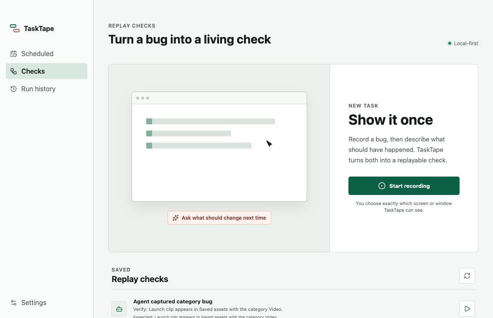
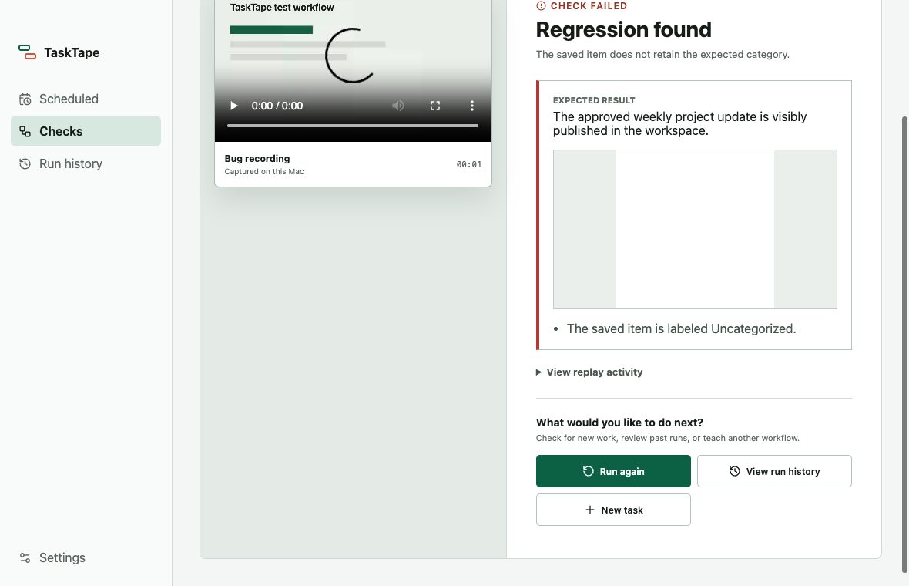

Claude Code
claude mcp add --transport http tasktape
http://127.0.0.1:19790/mcp
Local browser verification for coding agents
Reproduce the bug. Prove the fix. Keep the check.
Give Claude Code or Codex a visible browser it can control through MCP. TaskTape preserves the evidence and turns the session into a check your team can replay.
Apple Silicon beta. Local-only sessions. No account required.

One session preserves
From report to regression check
TaskTape gives coding agents the browser tools they need while keeping the expected result under human control.
Add TaskTape as a local MCP server in Claude Code or Codex.
Your agent opens the local app and follows the bug from start to failure.
Confirm what should happen before saving the regression check.
Run the same check after a change and inspect pass or fail evidence.
Proof you can inspect
Each replay keeps the expected result beside the observed browser state. Open the activity log for actions, screenshots, console output, requests, and the full trace.

Two-command setup
Open TaskTape, then add its local MCP endpoint to your coding agent.
claude mcp add --transport http tasktape
http://127.0.0.1:19790/mcp
codex mcp add tasktape --url
http://127.0.0.1:19790/mcp
Honest beta
macOS first. This download supports Apple Silicon Macs.
Local targets only. Replay sessions accept localhost URLs so your development work stays bounded.
Unsigned build. macOS may ask you to approve TaskTape in System Settings under Privacy & Security.
Make the fix measurable
Free, local, and ready for Claude Code or Codex.